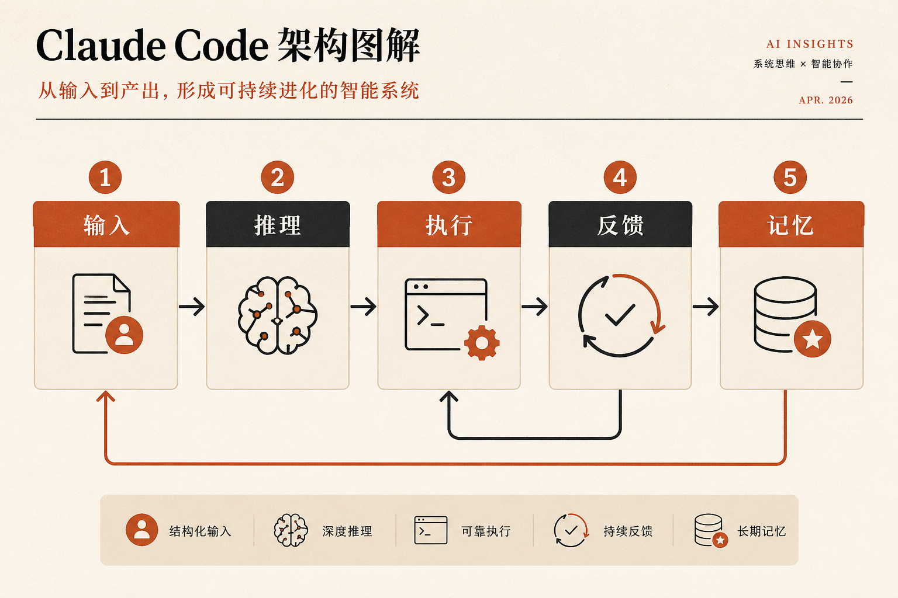
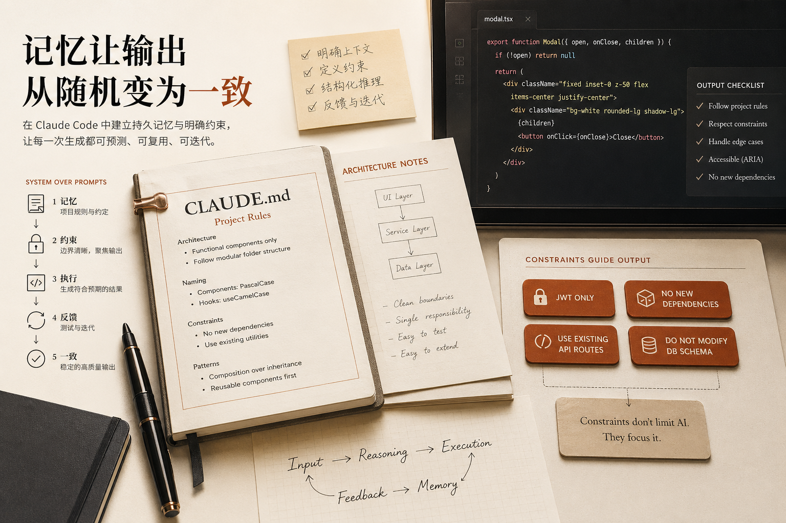

很多人以为，自己已经在认真使用 Claude Code 了。
每天都在提需求。
每天都在改 prompt。
每天都在重试。
结果忽好忽坏，于是又开始研究：
但问题往往不在 prompt 本身。
真正的问题是：
你可能一直在把 Claude Code 当成一个聊天框，而不是一个可以被编排进工作流的系统。
这两种用法，看起来都像“在让 AI 干活”，但结果完全不是一个量级。
前一种，靠运气。
后一种，靠系统。
而真正能把 Claude Code 用出稳定产出的人，几乎都会走到第二种。
先说一个很多人不愿意承认的事实：
单条 prompt 再精彩，也只是在争取一次更好的输出。
它能帮你提高命中率，但它并不能天然带来稳定性。
这就是为什么很多人会有一种熟悉的体验：
今天很惊艳。
明天又翻车。
明明是类似任务，表现却像两个人。
因为你每次面对的，都是一轮新的“现场发挥”。
它当然可能写得很好，但也完全可能漏边界、走偏方向、误解约束，或者在你没注意到的地方埋下隐患。
这不是模型“突然不行”，而是你还在用一种临场试运气的方式做工程。
很多人觉得，想把 Claude Code 用得更好，下一步应该是：
但更关键的一步，其实不是继续优化语言，而是开始设计系统。
也就是说，你要从“我这次该怎么问”，切换成“我该怎么让这类任务稳定发生”。
这两者之间的差别非常大。
前者还是在优化一次输出。
后者是在搭建一个能持续复用的环境。
真正有效的思路，不是让 Claude 每次都临场理解一切，而是提前为它准备好：
当这些东西都被组织起来之后，Claude 才开始真正像一个系统里的执行节点，而不是一个“你每次都要重新教一遍”的助手。
如果把这件事讲得更具体一点，一套成熟的 Claude Code 工作流，至少应该包含下面这 5 层：
输入、推理、执行、反馈、记忆。
这 5 层缺一不可。
因为只要少一层，你的结果就会重新滑回随机。

下面我按这 5 层来讲。
很多人给 Claude 的输入，其实就是一句话：
这种输入并不是不能用，但它的问题是：
你把最关键的信息，全都留给它猜了。
比如它不知道：
于是 Claude 只能边猜边做。
而当 AI 在猜你真实想法时，输出自然就会变得不稳定。
更成熟的做法，是把输入变成结构化信息。
至少要把下面几件事说清楚：
一旦你开始这样组织输入，你其实已经不再是在“写 prompt”，而是在“设计任务入口”。
Claude Code 很擅长写代码，这点没问题。
但问题是，很多人太急着让它动手了。
一上来就要实现，往往会产生两个后果：
真正更稳的方式，是先强制它把推理过程走完。
比如让它先做这些事：
这看起来只是多了几步，但对结果影响非常大。
因为工程问题最贵的，从来不是“少写了一行代码”，而是“在错误方向上写了一堆代码”。
如果你不提前约束思考顺序，最后就只能在产物上补课。
很多人用 Claude Code 时，默认把它产出的东西当“接近完成品”。
这是最危险的一步。
Claude 当然可以生成代码、重构逻辑、补测试，甚至把一整段功能写得很完整。
但工程上真正稳健的做法，不是“它会写，所以我就信”，而是：
它负责生成，但必须运行在你设计好的执行层里。
什么意思？
就是它的输出不能直接等于最终结果，而应该被放进一个可控环境里：
只有这样，Claude 才不是在“随机吐内容”，而是在一个你可控的执行链条中工作。
这是最容易把 Claude Code 从“看起来很厉害”变成“真的很有用”的关键一步。
很多人现在的工作方式还是：
这个流程的问题在于，人始终在当中间齿轮。
而系统化的做法，是让失败自动进入回流。
比如：
当这个闭环开始跑起来时，你得到的就不再是“一次回答”，而是一种持续收敛的能力。
这也是为什么很多人第一次把测试循环接进 Claude Code 后，会明显感觉它突然“靠谱”了很多。
因为从那一刻开始，它不再只是会写，而是开始会在失败中继续推进。
如果你每次都要重新告诉 Claude：
那你其实还在做一件很低效的事情：
把同一套规则，一轮一轮重新灌进去。
这不只是麻烦，更会直接拉低输出一致性。
因为你说得再完整，也很难保证每次都一样。
所以真正成熟的方式，是把长期规则沉淀成项目记忆。
比如放在 CLAUDE.md 这类项目级文档里，让它作为长期上下文的一部分存在。
这样做最大的价值，不是“让 AI 记住更多东西”，而是：
让它少随机一点。

很多人以为记忆的作用是“让 AI 更聪明”，但工程里更重要的往往不是更聪明，而是更一致。
一致，才有办法复用。
复用，才有办法放大。
很多人一提到约束，就担心会不会“限制 AI 发挥”。
但工程里恰恰相反。
约束不清，结果才会发散。
比如你让它做一个认证系统，如果没有边界，它可能会：
这些并不是它故意乱来，而是因为你没有把“可行动空间”定义清楚。
一旦你明确说：
它的输出空间就会立刻变窄，但结果反而更精准。
所以约束真正的作用，不是压缩能力，而是提高命中率。
这篇文章背后最重要的判断，我觉得不是技术层面的，而是方法论层面的。
普通人还在做的，通常是：
而真正把 Claude Code 用成杠杆的人，做的是另一件事：
也就是说，他们不再把 Claude 当成“更强的问答工具”，而是开始把它当成一个可编排的智能系统组件。
这两种人表面都在用同一个工具，但长期结果完全不一样。
前者会觉得 Claude 有时神、有时玄。
后者会越来越稳定地把它接进自己的工作流。
如果你今天只记住一句话，我希望是这句：
Prompt 只能帮你争取一次好结果，系统才能让好结果变成默认结果。
所以，真正应该升级的，不是你的提示词修辞，而是下面这些能力：
当你开始这么用 Claude Code，你就不再是在“请求 AI 帮忙写点东西”。
你是在设计一套环境，让高质量代码、稳定输出和持续迭代，变得越来越必然。
这时候，Claude Code 才真正开始从“工具”变成“杠杆”。